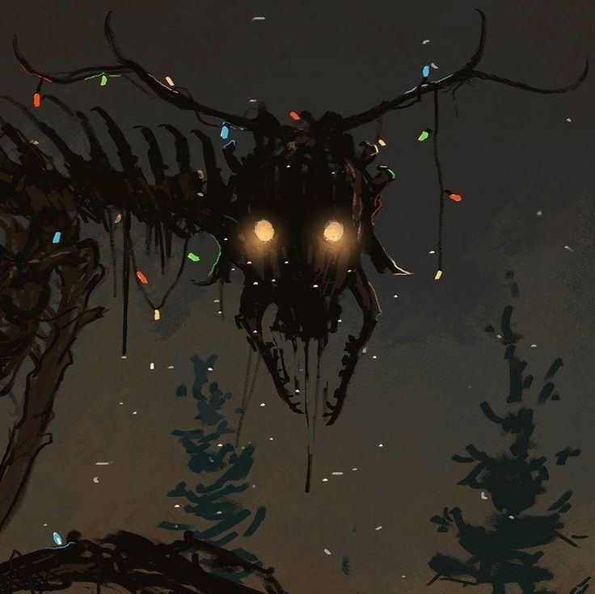

¿Acaso buscas un lugar extraordinario en donde descansar después de una vida tan agotadora?
Pues estás de suerte: hoy te presentamos un lugar reservado única y exclusivamente para ti,
nuestra gran y hermosa ciudad de terror. Te va a encantar tanto que, aun estando muerto,
no querrás irte de esta espeluznante ciudad.
Desde los barrios caníbales hasta el pantano de las brujas y los monstruos acuáticos,
podrás explorar cada rincón de esta enorme capital del terror como si fueras uno más de sus habitantes.
Y échale ambos ojos a todo lo que tenemos para mostrarte, antes de que los pierdas.
Postales de HalloweenTown
La calabaza
El símbolo de HalloweenTown y de su fundador.
Hollow Bastion
Cuando cae la noche, las sombras salen a pasear.

La Navidad
Nuestra fiesta favorita, a la manera de HalloweenTown.
Lo que nos define
Sin terror no habrá diversión, ese es nuestro fin: vivir eternamente en Halloween.
— Nuestro gran señor Calabaza
La característica fundamental de HalloweenTown es que tanto la ciudad como todos sus habitantes existen
con un único propósito: provocar miedo. Para ellos, el terror no es simplemente
una característica, sino la razón misma de su existencia. Lo hagan de manera consciente o inconsciente,
todos sus habitantes tienen una naturaleza orientada a generar temor, y ese es el aspecto
más importante de nuestra identidad.
Datos clave de la ciudad
Nombre
HalloweenTown, la gran ciudad del terror
Fundador
El Rey Calabaza
Año de fundación
1983
Población
666.000 habitantes (y aumenta durante las noches)
Gentilicio
Halloweeniano / halloweeniana
Habitantes
Monstruos, vampiros, licántropos, brujas, espectros, zombis y sombras
Clima
Fresco y nublado todo el año, con niebla espesa al anochecer
Moneda
Pumpkin Coins (🎃), con un valor de referencia equivalente al peso argentino
Fiesta favorita
La Navidad (aunque Halloween se celebra siempre)
Sector más misterioso
Hollow Bastion
Nuestra historia
Hace mucho tiempo, cuando apenas existían tres ciudades en el mundo, cada 31 de octubre
se celebraba un gran festejo en un inmenso jardín de calabazas. Durante esa noche, la energía pagana crecía
sin detenerse hasta que, un día, todo ese poder se concentró en una sola calabaza.
Al instante, esta cobró vida con una fuerza abrumadora y se alzó como el Rey Calabaza,
uno de los seres más temidos y misteriosos que existen.
Con su nuevo poder, se dirigió a un pequeño pueblo fantasma y lo transformó en una gran ciudad llena de vida:
HalloweenTown. Su propósito era ofrecer un lugar donde aquellos monstruos que eran temidos y rechazados
por otros pudieran encontrar aceptación y convivir con seres de su misma naturaleza.
Poco a poco, distintas criaturas fantásticas acudieron al lugar y lo convirtieron en su hogar.
Su nombre proviene de su característica cabeza con forma de calabaza, que terminó convirtiéndose también
en el principal símbolo de la ciudad: su imagen está presente en numerosas decoraciones y representaciones.
HalloweenTown no es solo un lugar de convivencia para los monstruos, sino también el legado de su fundador.
Barrios y sectores
HalloweenTown está dividida en sectores, igual que una gran ciudad como Nueva York.
Se reparten según las especies de monstruos que los habitan y lo que necesita cada una.
Solo de noche
Hollow Bastion
Uno de nuestros sectores más particulares: durante el día permanece prácticamente deshabitado,
hasta que llega la noche y aparecen sus habitantes, las sombras.
Estas entidades carecen de un cuerpo físico definido y tienen una forma maleable,
como la de una sombra convencional. Como la luz las vuelve vulnerables, se ocultan de día
y desarrollan sus actividades durante la noche.
Barrio Caníbal
Un barrio donde la gente se toma muy en serio eso de "comer bien". Ojo con los cables
de luz: más de uno terminó en el menú.
Pantano de las Brujas
Los monstruos acuáticos necesitan vivir cerca del agua, por eso se instalan junto a ríos
y pantanos. Algunos incluso habitan en las fuentes de la propia ciudad.
Del Rey
Barrio de la Calabaza
Pertenece exclusivamente al Rey Calabaza, aunque cualquier ser que desee conocerlo
puede visitarlo libremente.
Los habitantes celebran distintas festividades a lo largo del año, y la Navidad
es una de sus favoritas. Abrí cada dato para conocer un poco mejor nuestras costumbres.
A pesar de su apariencia aterradora y de que algunos pueden provocar accidentes,
la mayoría de los residentes son amigables y hospitalarios. Suelen recibir a los visitantes
con la misma amabilidad con la que el Rey Calabaza los ha tratado desde la fundación de la ciudad.
El propio Rey Calabaza suele disfrazarse de una versión bastante particular de Santa Claus
para repartir regalos por toda la ciudad, aunque sus obsequios pueden ser considerablemente
más peligrosos que los del tradicional. Curiosamente, en la ciudad de Navidad ocurre lo contrario:
durante octubre, la única festividad que se celebra es Halloween.
Su valor de referencia equivale al peso argentino y existen distintas denominaciones para facilitar
las transacciones. También se pueden usar monedas de otros países, pero depende de cada
establecimiento decidir si las acepta o no.
Ningún otro habitante puede apropiarse de estos lugares, que pertenecen al Rey Calabaza:
Su castillo
El Parque de las Calabazas
El Barrio de la Calabaza
Aun así, los tres pueden ser visitados libremente por cualquier ser que desee conocerlos.